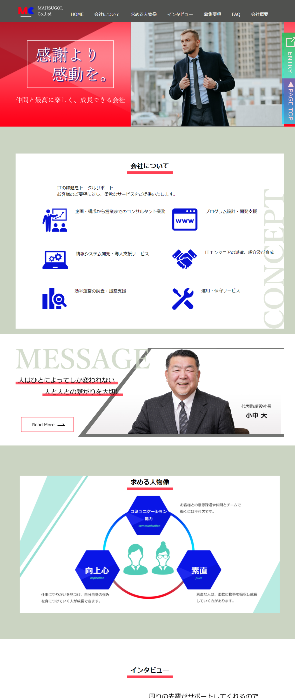
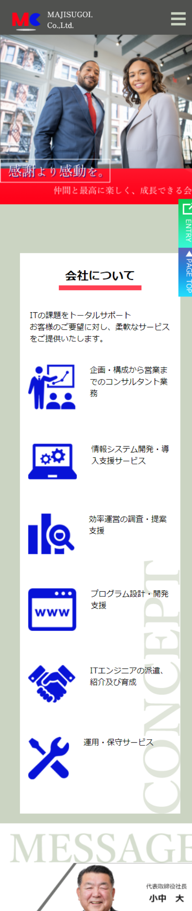

コーディング（HTML、CSS、JS）
職業訓練校でのグループ制作課題である「IT企業の採用LP」を制作しました。
サイトの目的は「求職者の集客」としました。
今回は4人1組のグループとなり、実際にあるIT企業様からご依頼を受けての制作を行なっています。
本採用には至らなかったため、実際の画像やテキストなど一部変更しております。
ディレクター（１人）、デザイナー（２人）、コーダー（１人）と分かれて作業を行い、私はコーダーを担当しました。
デザイナー担当からあがってきたデザインカンプを元に制作しています。
実際に社長のお話を聞き、現状のコーポレートサイトを見て、熱意のある会社だというイメージやロゴカラーが赤をメインカラーとしていたため、赤を基調としたデザインになっています。
また、JavaScriptでの動きやアニメーションもいくつか入れています。FAQや社長のメッセージなどをアコーディオンパネルにすることで、長くなりがちなLPを冗長になりすぎないようにしました。
ファーストビューのメイン画像をスライドショーにするなどして、会社の画像を複数流すことで会社の実際の雰囲気や空気感を見せて、会社と求職者の間で齟齬が生じないようにしました。
求職者がスマホからも閲覧することを考え、レスポンシブ対応も行っています。
コーディング・レスポンシブ対応：約8時間×2日（計16時間）
修正：約10時間
合計：約26時間
今回は、約５日間というスピード感の求められる制作でコーディングの時間は２日間ほどしか無かったため制作するにあたり、まず「コーディング設計書」を制作しました。
「コーディング設計書」を初めに制作することでdivタグを入れる場所やクラス名を決めてからコーディングに入れたので、コーディングをしている最中は悩まずに書くことができました。
コーディングの際に、デザイナー側で戻りが発生し、デザインを再度作り直すことが発生したのでコーディングもやり直しになり、かなり焦りながら取り組みました。
実際のクライアントが存在し、締切のあるグループ制作は初めてだったので、その恐ろしさを実感しました。
また、コーディングを担当したことで、他人が作ったデザインを元に制作を行うことが経験出来たのでとても良い機会となりました。
コーダーをやってみて、デザインカンプに何が記載されていたら楽なのか、反対に、どこまで書いていないと大変なのかが分かりました。
ですので、自分がデザイン側を担当する際には、「デザインカンプは整然された数字で制作すること」や「画面が大きくなった場合または小さくなった場合のデザインを詳しく伝えられるようにすること」などを気を付けたいと思いました。
XD、Dreamweaver
PC
スマートフォン